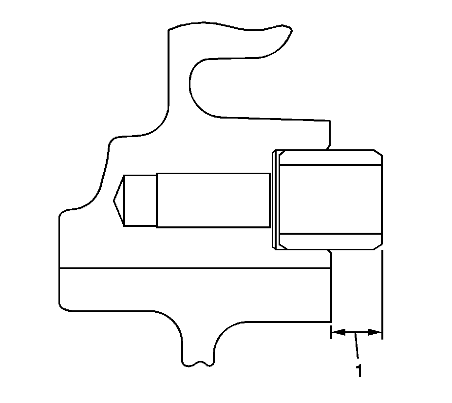
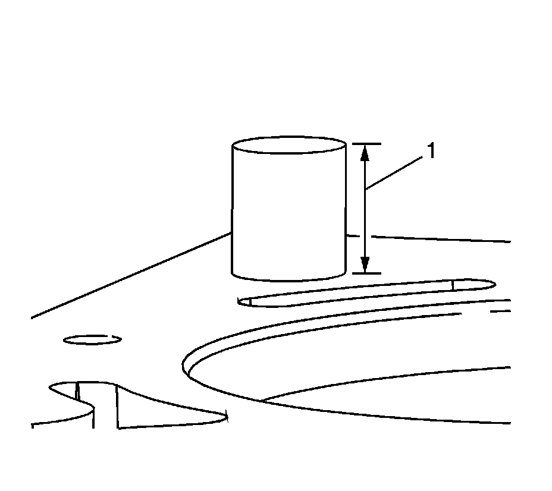
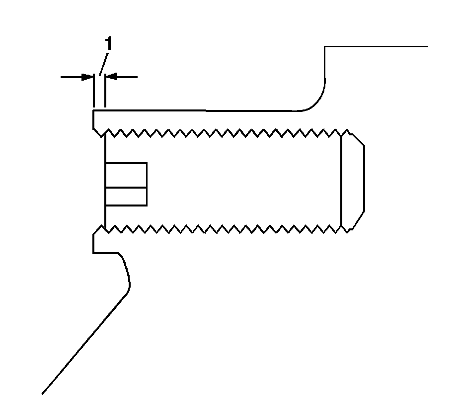
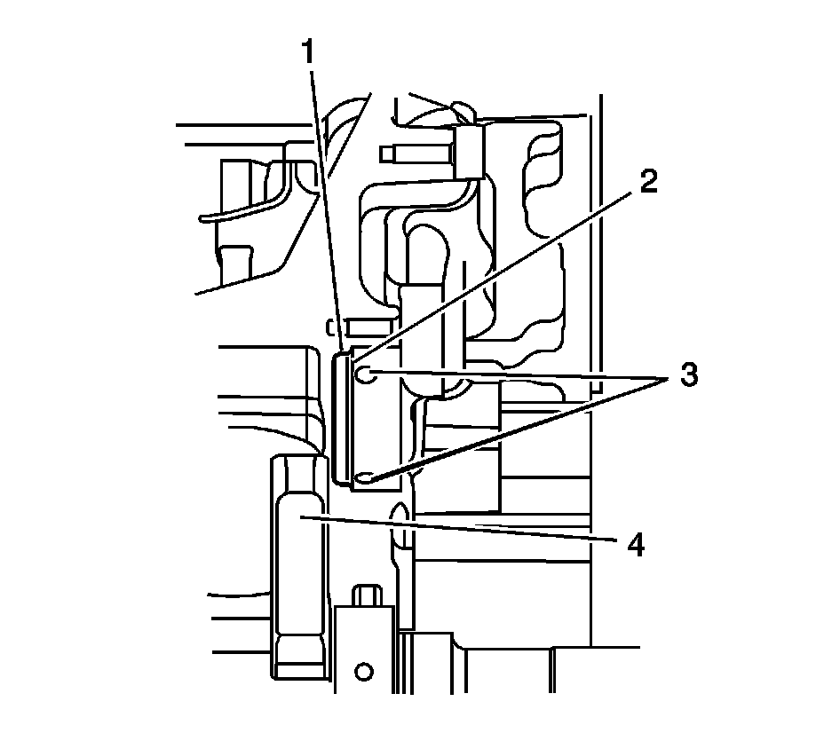
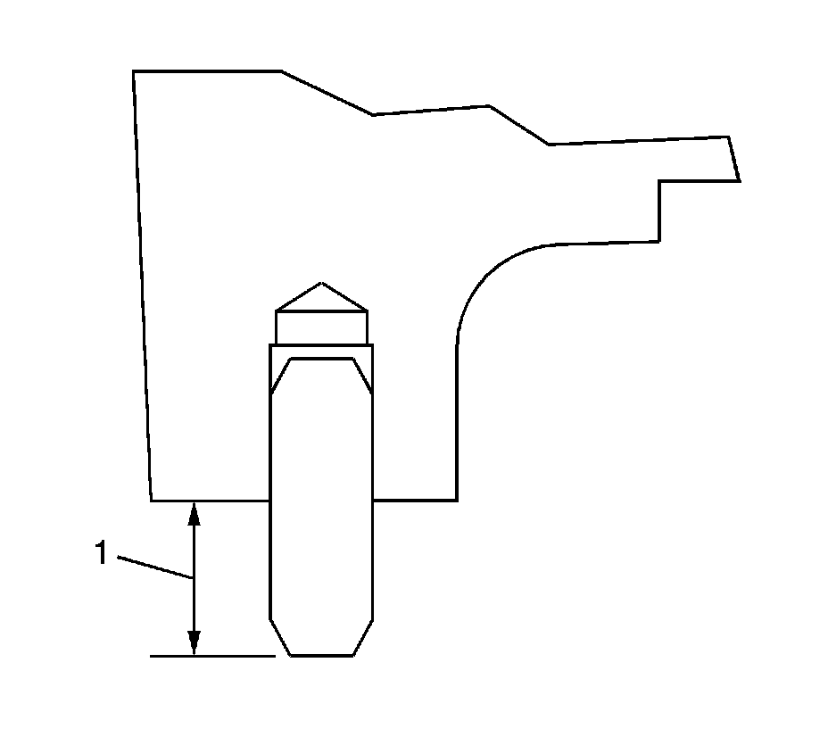
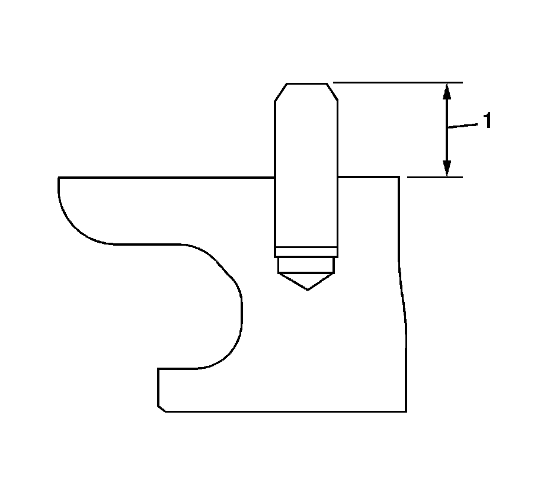

48. Engine Block Assemble - Upper
Engine Block Assemble - Upper

1. Install the engine block to transmission dowels.

2. Ensure the dowels are installed to the proper depth. The dowel should protrude (1) 9.0-10.0 mm (0.3543-0.3937 in).

3. Remove the left side block deck face to left cylinder head dowels.

4. Ensure the dowels are installed to the proper depth. The dowel should protrude (1) 13.5-14.5 mm (0.5315-0.5709 in).

5. Install the right side block deck face to right cylinder head dowels.
6. Ensure the dowels are installed to the proper depth. The dowel should protrude (1) 13.5-14.5 mm (0.5315-0.5709 in).

Notice: Refer to Fastener Notice (Fastener Notice) .
Important: Not all blocks will have the hex set stud installed. If the block being serviced has a hex set stud installed, and the hex set stud is removed, a NEW hex set stud must be reinstalled in the same location.
Important: Ensure the NEW hex set stud has pre-applied sealant to the threads.
7. If removed, install a NEW hex set stud.
Tighten the NEW hex set stud to 15 N.m (11 lb ft).

8. Ensure the NEW hex set stud is installed to the bottom of the hole and the end is flush or below (1) the surface of the engine block boss.

Notice: Proper installation of the camshaft intermediate shaft plug must be ensured. An improperly installed camshaft intermediate shaft plug can interfere and restrict oil flow to the cylinder heads if installed too shallow, and may interfere with the crankshaft if installed too deep. Failure to properly install the camshaft intermediate shaft plug can lead to engine damage.
9. Install the NEW camshaft intermediate drive shaft block plug.

10. Ensure the plug (1) is properly seated to the flange (2) in the bore and will not interfere with the engine block oil passages (3) or the crankshaft counter-weight (4).

11. Install the engine block to engine front cover pins.

12. Ensure the pins are installed to the proper depth. The pin should protrude (1) 8.5-9.5 mm (0.3347-0.3740 in).

13. Install the engine block to crankcase pins.

14. Ensure the pins are installed to the proper depth. The pin should protrude (1) 12 mm (0.4724 in).

15. Install the engine coolant drain plug.
Tighten the engine coolant drain plug to 20 N.m (15 lb ft).